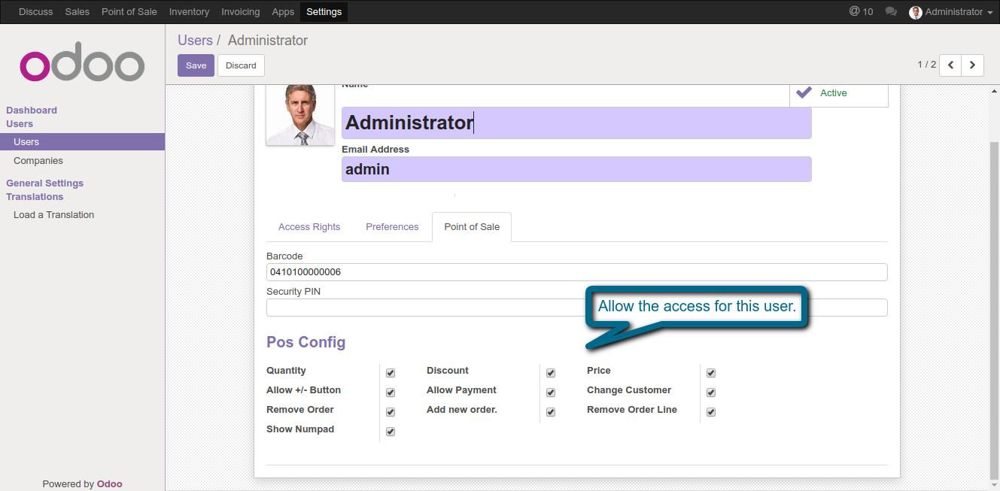
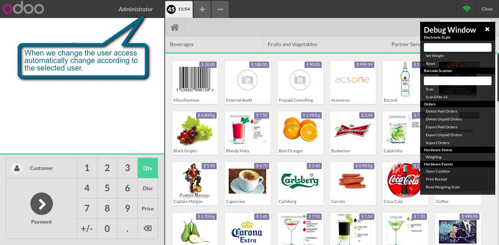
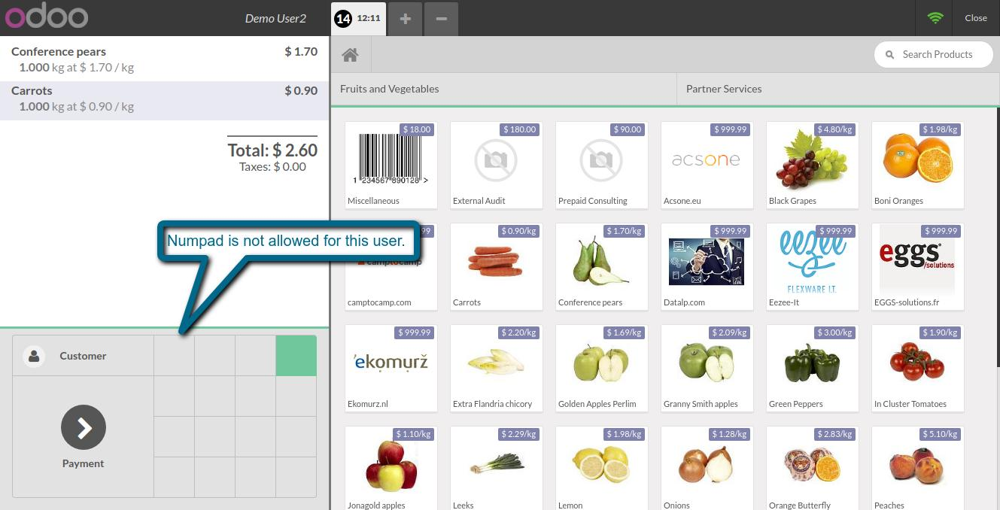

Pos change user wise access
Easy way to give user access
Features
- This module allows you to give access in point of sale.
- We can change access according to user at run time so we don't want to refresh POS.
1. Configuration for POS access.

2. Change access according to user.

3. Numpad is not allowed for this user.

If You Need Any Help or Customization Please Contact
Email Id: dev.webveer@gmail.com